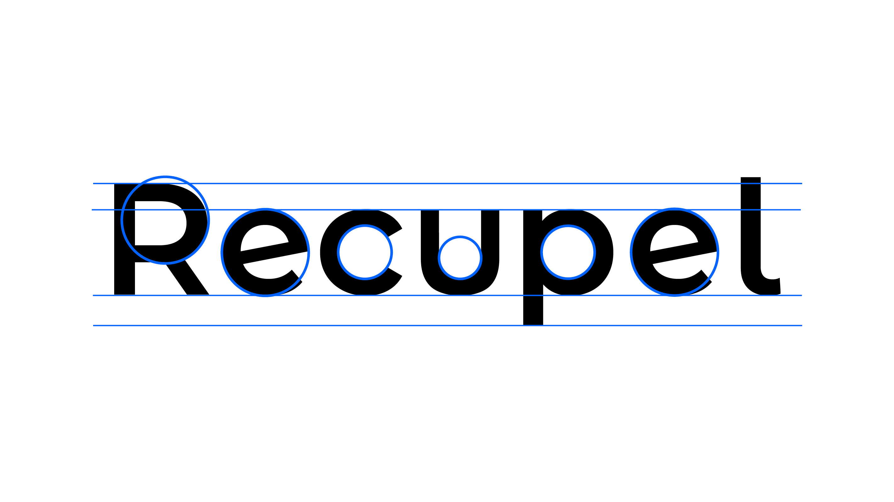

Our logo
Het woordmerk is ontworpen met het oog op duidelijkheid en eenvoud. Om vertrouwen en moderniteit uit te stralen. Het Recupel logo is volledig opgebouwd met cirkels. En gebaseerd op het sterke Montserrat Alternates lettertype. De open en afgeronde stijl geeft onze strategie en visie sterk weer. Het straalt autoriteit en tegelijktijd ook toegankelijkheid uit.

Logo white
Het woordmerk is ontworpen met het oog op duidelijkheid en eenvoud. Om vertrouwen en moderniteit uit te stralen. Het Recupel logo is volledig opgebouwd met cirkels. En gebaseerd op het sterke Montserrat Alternates lettertype. De open en afgeronde stijl geeft onze strategie en visie sterk weer. Het straalt autoriteit en tegelijktijd ook toegankelijkheid uit.

Logo construction
Het Recupel logo is volledig opgebouwd uit perfecte cirkels. Dit om ook in ons logo onze visie volledig door te trekken. Het is gebaseerd op Montserrat Alternative.
logo kleur
We gebruiken het hartekamp vzw logo zo vaak mogelijk in kleur. Steeds op een egale lichte achtergrond.
logo positief
Indien het logo maar uit één kleur mag bestaan gebruiken we dit logo op een lichte achtergrond.
logo negatief
Indien het logo maar uit één kleur mag bestaan gebruiken we dit logo op een donkere achtergrond.

embleem kleur

embleem positief

embleem negatief
hartekamp kleur
hartekamp positief
hartekamp negatief


Er mogen geen slagschaduw of andere effecten aan het logo toegevoegd worden.
Het logo mag niet geroteerd worden.
Er mogen geen andere kleuren in het logo gebruikt worden.
Het logo in kleur of zwart mag niet op een beeld geplaatst worden, enkel op een witte ondergrond.
Het logo mag niet samengedrukt of uitgerokken worden.
De compositie van het logo mag niet aangepast worden.
PNG is net zoals JPEG of GIF een afbeeldingformaat dat je voor Word- en andere office toepassingen. Het maakt geen gebruik van compressie zoals JPEG waardoor er geen kwaliteitsverlies optreedt. Angezien een PNG wordt opgebouwd uit pixels kan deze niet vergroot worden.
Een EPS (Encapsulated PostScript-bestand) is een grafisch bestand dat teksten en vormen vectorieel beschrijft. Vectorafbeeldingen laten zich tot elk gewenst formaat vergroten en verkleinen zonder dat er kwaliteitsverlies optreedt. Deze file kan worden aangeleverd aan drukkers, beletteraars, zeefdrukkers, ...
SVG staat voor Scalable Vector Graphics. Vectorafbeeldingen laten zich tot elk gewenst formaat vergroten en verkleinen zonder dat er kwaliteitsverlies optreedt. Deze file kan worden aangeleverd aan drukkers, beletteraars, zeefdrukkers, ...
Portable Document Format (PDF) is een bestandsformaat dat wordt gebruikt voor het op een betrouwbare manier presenteren en uitwisselen van documenten, onafhankelijk van software, hardware of besturingssysteem.